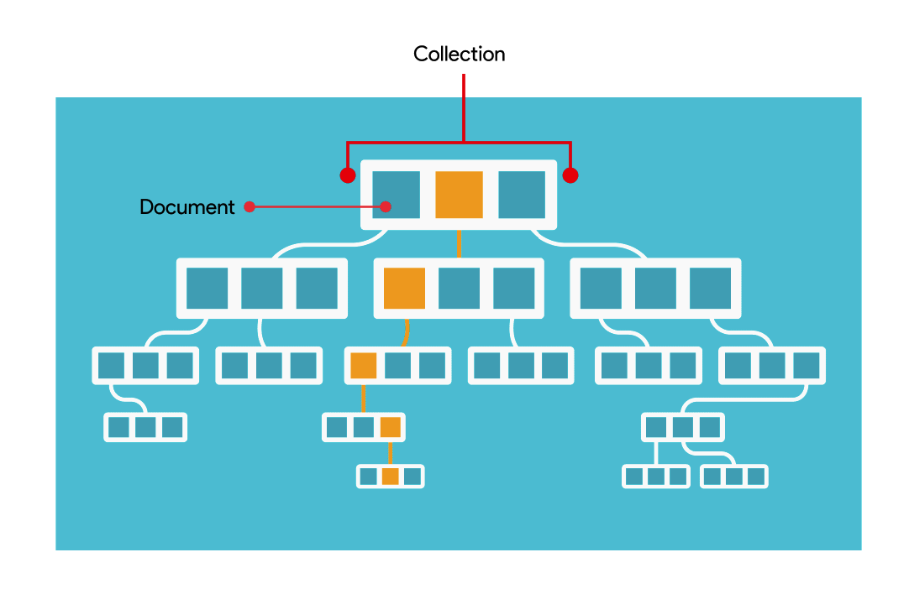
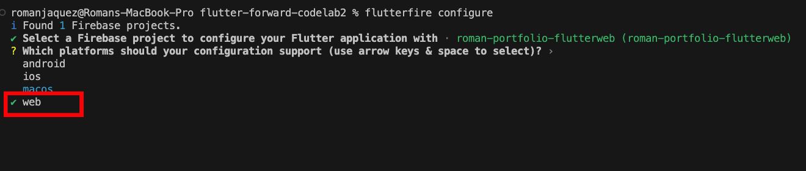
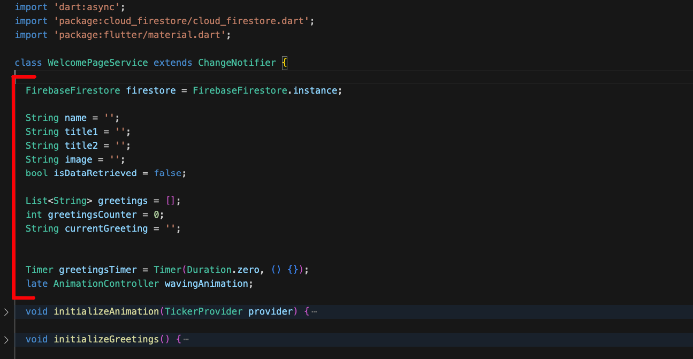

Welcome to the exciting world of Flutter Web!
In this workshop, you've been building your own personal portfolio Flutter web app, with hard-coded data. In a real-life scenario, you might want to pull the data that feeds your portfolio web app from another source (an external source like a backend service, a database) and that's where Firebase comes in!
What is Firebase?

Firebase is an app development platform that helps you build and grow apps and games users love. Backed by the Google Cloud and trusted by millions of businesses around the world, and it contains a suite of products for building robust mobile, web and desktop apps that can scale to billions of users.
In this session we'll be using Firebase Cloud Firestore, a NoSQL document database that lets you easily store, sync, and query data for your mobile and web apps - at global scale. One of its best features is its serverless nature, in which you can stand up a Firebase backend without provisioning your own servers. You can access Cloud Firestore with traditional client libraries such as Node, Python, Go and Java.
We will be working on the Free-Tier of Firebase (Spark - No cost $0/month) and you can see the full plan details and the decent quotas you get under this tier, which is enough to get started, by clicking on this link.
Firebase Data Model
Unlike a SQL database, there are no tables or rows. Instead, you store data in documents, which are organized into collections.

Each document contains a set of key-value pairs. Cloud Firestore is optimized for storing large collections of small documents.
All documents must be stored in collections. Documents can contain subcollections and nested objects, both of which can include primitive fields like strings or complex objects like lists.
Documents
In Cloud Firestore, the unit of storage is the document. A document is a lightweight record that contains fields, which map to values. Each document is identified by a name.

Collections
Documents live in collections, which are simply containers for documents. For example, you could have a products collection to contain your various products, each represented by a document:

Cloud Firestore is schemaless, so you have complete freedom over what fields you put in each document and what data types you store in those fields. Documents within the same collection can all contain different fields or store different types of data in those fields. However, it's a good idea to use the same fields and data types across multiple documents, so that you can query the documents more easily.
In Firebase is how we will store the data that will power our application, also we'll leverage one of its most powerful features: real-time updates.
Pulling Data from Firebase Cloud Firestore
There are three ways to retrieve data stored in Cloud Firestore. Any of these methods can be used with documents, collections of documents, or the results of queries:
- Call a method to get the data once: we will use this to display the initial data from our data store.
- Set a listener to receive data-change events: we will use this to respond to updates to our data so we keep the application in sync with the backend.
- Bulk-load Firestore snapshot data from an external source via data bundles. We will not touch this approach in this session, but feel free to explore this feature on your own.
When you set a listener, Cloud Firestore sends your listener an initial snapshot of the data, and then another snapshot each time the document changes.
In this session, we'll be exploring the simplest case, which is calling a method to get the data once, but definitely we'd recommend exploring the real-time capabilities of Cloud Firestore since it's one of their most highlighted features.
In this section we'll create a Firebase project, and we'll create our first Cloud Firestore database and create the collection of documents that will power our portfolio web app.
Let's start by navigating to the Firebase Console by clicking on this link. Use a valid Gmail account, preferably one that you haven't used before for setting up Google Cloud or Firebase, and with no billing accounts attached to it. Remember this Gmail account for later steps in this workshop.
Create your first project by clicking on the Create a Project button:
In the wizard, provide a name for your project, and accept the terms by checking the checkboxes (if shown):
In the next step, disable Google Analytics as we don't need it for this project (you can enable later if needed). Then, click on "Create Project":
Wait until the project gets created (this may take a few seconds):

Once completed, you should get the following message that your project is ready. Click "Continue" to proceed:
You've landed at the home page of the Firebase Console, where you can see all features in Firebase at your disposal. We'll focus on Firebase Cloud Firestore for now, so in the left navigation menu, under Build, click on Firestore Database:
In the Cloud Firestore landing page, click on "Create database":
On the first step of the database creation wizard, select to Start in test mode, which will lower the security rules on the database so we can set it up quickly (this last 30 days, so make sure to update your security rules after a month). Click "Next":
Next step deals with the location of the Cloud Firestore database. Pick a multi-regional location for increased availability - you can keep the default nam5 (us-central) if you want. Click "Enable":
Wait a few seconds until your database is provisioned in the Google Cloud:

We've landed on our Cloud Firestore database called roman-portfolio-flutterweb, after the name of the project. We must start now by creating a collection, which will be the container for our documents. Create your first collection by clicking on the Start collection button:
Assign a unique ID to our collection - let's call it personal-portfolio; click "Next":
With our personal-portfolio collection created, you can proceed to start adding documents. Let's add a first document to this collection. You can either assign it your own ID, or use the Auto-ID option.
Add the ID welcome-page, and the following fields:
- name: (type string) Roman (best if you put your name here!)
- title1: (type string) Flutter GDE (or your own title!)
- title2: (type string) Cloud Architect (or your own subtitle)
- image: (type string) https://avatars.githubusercontent.com/u/5081804?s=400&u=04dc8bfa749d69165ab08ffba89edd5f095ba21d&v=4 (or your own image hosted somewhere)
- greetings: (type array) and add the following values:
- ‘Hello', ‘Hola', ‘Bonjour', ‘Olá', ‘Ciao', ‘Namaste', ‘Kon'nichiwa'
Your document should look like below. Click "Save" when ready:
After saving the document, your data structure should look like this:
Awesome! With our database fully setup and loaded with data, let's go back to Flutter to connect it to this newly created Cloud Firestore database!
With the Firebase project created and our Firestore database loaded and hosted in the Google Cloud, we need a way to connect to it to retrieve the data stored through our Flutter Web App. For that, we'll need FlutterFire.
FlutterFire is a set of Flutter plugins which connect your Flutter application to Firebase.
First, we need to set up the FlutterFire CLI, which is a useful tool which provides commands to help ease the installation process of FlutterFire across all supported platforms.
Installing the FlutterFire CLI
Let's install it first.
The FlutterFire CLI depends on the underlying Firebase CLI. If you haven't already done so, make sure you have the Firebase CLI installed on your machine. If not, make sure you have node.js on your machine and Install the Firebase CLI via npm by running the following command:
npm install -g firebase-tools
Next, install the FlutterFire CLI by running the following command:
dart pub global activate flutterfire_cli
After running the above command, you will either have to add the FlutterFire executables to your PATH, or you can run the following command right after, since the next set of commands will depend on FlutterFire being on the PATH:
export PATH="$PATH":"$HOME/.pub-cache/bin"
And you should be all set. Let's proceed with the rest of the setup.
The FlutterFire CLI extracts information from your Firebase project and selected project applications to generate all the configuration for a specific platform.
First, you must be logged in to your Firebase project via the Firebase CLI with THE SAME EMAIL YOU CREATED YOUR FIREBASE PROJECT WITH; confirm this by running the following command:
firebase login
You will get a prompt asking whether you want Firebase to collect usage - say no for now by typing ‘n':
Then you'll be presented with the web authentication page for the Firebase CLI, where you must Allow firebase permissions to acces your Google Account:
Close the browser window and come back to the command line, where you'll see the success message:
If none of that worked or you were previously logged in with a different Gmail account, just execute firebase logout then run the login workflow above again, and you should be good to go.
In the root of your application, run the configure command:
flutterfire configure
The configuration command will guide you through a number of processes:
- Fetches all Firebase projects under the account associated with the logged in user; in our case it fetched our roman-portfolio-flutterweb project. Pick it by using the keyboard arrow keys and press ENTER:
Next prompt asks which platforms are you planning to support; in our case we'll only do web so use the SPACE BAR on your keyboard to add / remove selections; just keep the web. Then hit ENTER:

After this step, your project will generate some boilerplate code, especially an important file called firebase_options.dart inside the lib folder. This .dart file contains all the required configuration and connection strings to be able to connect to your Firebase project and thus all the services you have enabled there - in our case, the Firebase Cloud Firestore database we set up earlier.
Import the Firebase Core packages
Next, let's import some required packages that facilitate the communication to Firebase from Flutter.
Before any Firebase services can be used, you must first install the firebase_core plugin, which is responsible for connecting your application to Firebase.
Install the plugin by running the following command from the project root:
flutter pub add firebase_core
Initialize Firebase
Next the generated options need to be provided to the initializeApp method. Since this is an asynchronous operation, the main function can be modified to ensure initialization is complete before running the application.
First import the firebase_core plugin and generated firebase_options.dart file in your main.dart file as follows:
//... in the lib/main.dart, at the top of the file:
import 'package:firebase_core/firebase_core.dart';
import 'firebase_options.dart';
Next, within the main function, ensure WidgetsFlutterBinding is initialized and then initialize Firebase, all before the runApp method. DO NOT FORGET TO ADD THE ASYNC KEYWORD TO THE MAIN METHOD since this is an async call. Copy / paste the necessary information and leave the runApp as-is:
// ... updated main() method in the main.dart
void main() async {
WidgetsFlutterBinding.ensureInitialized();
await Firebase.initializeApp(
options: DefaultFirebaseOptions.currentPlatform,
);
// YOUR RUNAPP METHOD GOES HERE...
// runApp(...)
}
And this is how the updated main method will look like with the rest of the code:
On its own, the firebase_core plugin provides basic functionality for usage with Firebase. FlutterFire is broken down into individual, installable plugins that allow you to integrate with a specific Firebase service. Let's install the plugin for connecting to our Firebase Cloud Firestore database.
Before proceeding with this step, make sure that firebase_core is installed and Firebase initialized, therefore make sure the previous step is complete.
Add dependency
On the root of your Flutter project, run the following command to install the plugin:
flutter pub add cloud_firestore
Rebuild your app
Once complete, rebuild your Flutter application:
flutter run -d chrome
With that set up, let's now start pulling data from Firestore by tapping into the available API.
Let's refactor the WelcomePageService by removing the hardcoded data and pull the data from Firestore.
For that, we need a new Firestore instance. Start by importing the Cloud Firestore package in the welcome_page_service.dart file:
//... at the top of the file:
import 'package:cloud_firestore/cloud_firestore.dart';
Then, inside the WelcomePageService class, at the top, add the following line, which creates a new Firestore instance:
//... inside the class, but at the very top:
FirebaseFirestore firestore = FirebaseFirestore.instance;
Next, in the same WelcomePageService class, clear out the name, title1 and title2 fields by assigning an empty string to them. Add a two new properties: image (type String), and isDataRetrieve (type boolean). Your cleared out and newly added member variables should look like this now:
//... inside the class, in place of the existing member variables:
String name = '';
String title1 = '';
String title2 = '';
String image = '';
bool isDataRetrieved = false;
Proceed now to clear out the greetings array and make it empty by assigning an empty array ([]) and removing the static modifier from it. The greetingsCounter property - make sure it remains at zero (0) and the currentGreeting property, assign an empty array to clear it out as well. This portioni of the code should look like this:
//.. inside the class, in place of the greetings-related properties
List<String> greetings = [];
int greetingsCounter = 0;
String currentGreeting = '';
Take another look and make sure your code inside the top of the WelcomePageService class looks like this (both updated and existing member variables):

In the WelcomePageService class, create a method called retrieveWelcomePageData, which returns a Future of type bool, decorated with the async keyword, as such:
//... inside the WelcomePageService class, add this method:
Future<bool> retrieveWelcomePageData() async {
// REST OF THE CODE WILL GO HERE
}
Let's dissect this method a bit:
- This method returns a Future; when performing computations that are asynchronous, you must wrap them inside a Future; in the case of fetching data from an external API, you cannot expect a result immediately. Instead of blocking the computation until the result is available, the computation (in this case, our method) returns a Future which will eventually "complete" with the result. In this case, the Future will return true if the data was retrieved, and false otherwise.
Use the async keyword when inside your method you will be performing an asynchronous operation. You then use the await keyword to "delay" the execution until the result arrives. This doesn't block the main thread; all it does is puts it in Flutter's event queue, allowing you to do other things (i.e. put up a spinning indicator, etc.).
Let's continue.
*** THE REST OF THE CODE WILL GO INSIDE THE retrieveWelcomePageData !!!
Inside our method, let's add a condition to return true if our flag called isDataRetrieved is true, and return out of the function:
// ... inside the retrieveWelcomePageData
if (isDataRetrieved) {
return true;
}
This will prevent the method from executing further once the data has been retrieved.
Now, use the existing firestore reference to retrieve a collection from Cloud Firestore by calling the collection API method, and supplying the name of the collection called personal-portfolio; store the reference to the collection in a variable called personalPortfolioCollection, type CollectionReference, as such:
// get a reference to the collection called "personal-portfolio" from Cloud Firestore
CollectionReference personalPortfolioCollection = firestore.collection('personal-portfolio');
Recall that collections are a logical group or containers for documents. So, out of the personalPortfolioCollection, extract a reference (or a document snapshot) of one of the existing documents called welcome-page. Store the reference in a variable called pageDocument, type DocumentSnapshot.
A DocumentSnapshot in Cloud Firestore contains data read from a document in your Cloud Firestore database. The data can be extracted by calling a method called get. This method returns a Future of type DocumentSnapshot, which we'll "await" for its data, and delay the execution of the program until the data arrives by putting the await keyword in front of the execution. Add this line of code:
// get the document from the collection reference,
// and using "get()" to retrieve its data
DocumentSnapshot pageDocument = await personalPortfolioCollection.doc('welcome-page').get();
Remember also how the data is structured in Firestore: as a collection of of key-value pair dictionaries or maps. After obtaining the reference to the document, extract the data in the document by calling .data() on the document, and casting it as a Map<String, dynamic>, since the keys are of type String and the value can be either strings, numbers, arrays, etc. hence the dynamic keyword. Store the data in a property called pageData, type **Map<String, dynamic>:
// after getting the document reference, pull its data
Map<String, dynamic> pageData = pageDocument.data() as Map<String, dynamic>;
Now, proceed to extract each piece of data by key, as it is stored in the database, and store in the appropriate member variable, as such:
- for name, extract it as **pageData[‘name']
- for title1, extract it as **pageData[‘title1']
- for title2, extract it as **pageData[‘title2']
- for image, extract it as **pageData[‘image']
- for greetings, since it is an array of string values, you must cast it as a List<dynamic>, then map each value as a String type in Dart by calling toString() on each item, then doing a toList() on the result, to package them up again as a Dart string list.
Your code should look like this:
// add this code for the mapping of your properties
name = pageData['name'];
title1 = pageData['title1'];
title2 = pageData['title2'];
image = pageData['image'];
greetings = (pageData['greetings'] as List<dynamic>).map((e) => e.toString()).toList();
After the data from the greetings array is retrieved, then you can extract the first value and assign it to the currentGreeting member variable, as such:
// assign the first value out of the greetings array to the currentGreeting property
currentGreeting = greetings[0];
If the program reaches this point, it means all is well and the data has been retrieved and consumed, therefore it is time to set the isDataRetrieved to true, and return the value to whoever is awaiting on this method, as such:
// ... after all data is retrieved, return true
isDataRetrieved = true;
return isDataRetrieved;
Your code for the retrieveWelcomePageData() should look like this afterwards:
Now that the pieces are in place, let's put it in action.
Proceed to go to the SplashPage class in the splash_page.dart file and let's do some refactoring here. What we'll do is instead of just doing a simulated delay to show the spinning indicator, we'll instead fetch the data during this delay, then proceed further into the application only until the data is retrieved. We'll have to reference the WelcomePageService from here and invoke the retrieveWelcomePageData method here.
Let's proceed.
Create a new method here called fetchData, which takes the BuildContext provided to this widget by Flutter in the initState. Add the method anywhere inside the class:
// inside the SplashPage class:
void fetchData(BuildContext context) {
}
Now, grab the code that does the whole delayed execution and navigates away from this page inside the initState method and move it inside this method, and replace it by the invocation of the newly created fetchData method, like so:
// your new fetchData method should look like this:
void fetchData(BuildContext context) {
delayTimer = Timer(const Duration(seconds: 2), () {
GoRouter.of(context).go(WelcomePage.route);
});
}
And your initState method should look like this now:
@override
void initState() {
super.initState();
fetchData(context);
}
Let's continue with the refactoring work.
Add the keyword async to the callback provided to the Timer execution, as such:
We're doing this because here is where we will await for the data from Firestore to arrive before proceeding any further.
Now, inside the Timer's callback, add the line to code to fetch an instance of the WelcomePageService using the supplied context, and immediately invoke the retrieveWelcomePageData, preceded by the await keyword; the result of this asynchronous call, store it in a local variable called isWelcomePageDataRetrieved, as such:
// inside the Timer's callback:
var isWelcomePageDataRetrieved = await context.read<WelcomePageService>().retrieveWelcomePageData();
Now, wrap the existing call to navigate to the WelcomePage route inside a condition to check whether the value of the isWelcomePageDataRetrieved is true:
// wrap the GoRouter call inside this condition:
if (isWelcomePageDataRetrieved) {
GoRouter.of(Utils.mainNav.currentContext!).go(WelcomePage.route);
}
Confirm that both your initState and your fetchData method look like this:
Great, now that these pieces are in place, let's go now back to the WelcomePage class and consume the data retrieved.
Now that we know we're pulling the data from Firebase and capturing it upfront, let's consume it.
In the WelcomePage class, inside the welcome_page.dart file, go to the build method and start replacing the hard-coded values here by their corresponding properties:
- Find the NetworkImage widget and replace the hard-coded image path by the welcomeService.image property
- Confirm that the welcomeService.name is feeding the TextSpan widget
- Confirm that the two Text widgets fed by the welcomeService.title1 and welcomeService.title2 respectively.
If all goes well, you should be seeing a fully hydrated page with data coming from Cloud Firestore!
Additional Refactoring required
It all works well only when you start from the SplashPage and then you navigate to the WelcomePage. If you're in the WelcomePage and you hit refresh, you end up with a weird-looking page, because the data gets retrieved only when we are in the splash and not in this one. Let's fix that.
Go to the WelcomePageService class, and create a small method called refreshData. All the method will do is fetch the data once again and trigger a rebuild on the WelcomePage widget, as well as mark the isDataRetrieved flag to true, as such:
// inside the WelcomePageService class...
void refreshData() async {
isDataRetrieved = await retrieveWelcomePageData();
notifyListeners();
}
Back in the WelcomePage class widget, in the initState, let's do some refactoring:
- Conditionally invoke the initializeGreetings() method only if the isDataRetrieved flag from the WelcomePageService instance is true, otherwise, invoke a refresh of the data by calling the newly added refreshData, as such:
// inside the initState method, replace the call to "initializeGreetings"
// by the following code:
if (serviceInstance.isDataRetrieved) {
serviceInstance.initializeGreetings();
}
else {
serviceInstance.refreshData();
}
Your newly updated initState method should look like this:
This should take care of the web app hydrating itself with fresh data from Firestore while on this page and hitting refresh, but it should work normally when you start the web app all the way from the splash page still.
To avoid a "blink" or brief period where you dont' see data on the welcome page until it arrives (about a second), introduce this piece of code inside the build method's Consumer widget of the WelcomePage, where you will show nothing if the data hasn't been retrieved yet, as such:
// inside the Consumer widget in the WelcomePage's build method:
if (!welcomeService.isDataRetrieved) {
return const SizedBox.shrink();
}
Confirm that your code looks like this after adding the condition:
And that's it! You've been able to pull data from Firestore and consume it within your Flutter Web app! Great job!!
Now it's time to showcase your work to the world - by hosting your masterpiece on Firebase Hosting!
It's time to make our Flutter web app masterpiece available for the whole world to appreciate, by publishing it to Firebase Hosting - a production-grade web content hosting for developers. With a single command, you can quickly deploy web apps and serve both static and dynamic content to a global CDN (content delivery network).
For this exercise, we will use both the Firebase Console, a web-based GUI for managing your Firebase projects as well as the Firebase CLI (which you should've installed on Step 3), which provides a set of command-line-based tools for managing, viewing and deploying to Firebase projects.
Prerequisites: For the next steps must have NodeJS and NPM installed on your machine, as well as the Firebase CLI.
If you haven't installed it, go ahead and run the following installation command:
npm install -g firebase-tools
As before, after installing the CLI, you must authenticate. Run the following command:
firebase login
If you're already logged in, that's fine, otherwise you must go through the authentication workflow (in Step 3) to be authenticated and allow the Firebase CLI to access your Google account.
Once that's done, proceed to the next step.
Initialize the Firebase Environment
Proceed to now to run the following command to initialize your current Flutter project as a Firebase environment:
firebase init
This should present you with a series of prompts to properly configure the project; the first option is the Firebase feature you want to set up; in our case, select the Hosting: Configure files for Firebase Hosting and (optionally) set up Github Action deploys option:
NOTE: Use the arrow keys on your keyboard to navigate through the options as well as the space bar to make a selection, then Enter to proceed.
Next, select the Firebase project you want to associate this project directory. Select the Use an existing project option:
Then, go ahead and navigate to your particular project. Select it with the keyboard arrow keys and hit Enter:
Next, as the directory that Firebase will use to grab your web-generated files for deployment, set it to be the build/web folder - this is the default location where Flutter web publishes your assets ready to be deployed on a web server. You must type the words build/web - no errors!
Next, make sure to type ‘y' in the option to configure your web app as a single-page app - this will help you when it comes to adopting a url strategy for your navigation later on:

Type ‘N' when it comes to setting up automatic builds and deploys with Github:

After that last option, confirm that you get a message saying Firebase initialization complete in the command line, as such:
Notice a few files that get generated as a result of initializing Firebase in this project: a file called .firebaserc and a firebase.json, which are files containing the configuration collected during init, and needed to connect to Firebase and deploy our web app.
Let's proceed to the next step, which is the actual deployment.
Let's now deploy our newly minted Flutter Web App.
Make sure you are at the root of the project where the .firebaserc and a firebase.json are located.
Build your Flutter web app
First, you must build the Flutter web app so it generates web-compatible files out of your Flutter code. Run the following command:
flutter build web --release
This command builds your Flutter web app, and generates a package in your build/web folder with web-server compatible files ready to be deployed on any web server.
OPTIONAL: If you're having issues with image decoding, you could rebuild the project by adding these optional flags --dart-define=BROWSER_IMAGE_DECODING_ENABLED=false to disable image decoding on your browser, so your full command should look like:
flutter build web --dart-define=BROWSER_IMAGE_DECODING_ENABLED=false --release
Verify that the project has been built for the web by navigating to the build/web folder in your project.
Now, all we need to do is run the following command to deploy your web project to firebase:
firebase deploy
After a little bit, you should get a message confirming that the deployment is complete. The Firebase CLI should generate a Hosting URL, where your web app is deployed. Navigate to that URL and confirm your web page is live and public.
Hoorayy!!!! We are live!!! Congrats on making this far! Now your personal portfolio web app developed in Flutter is fully available for the world to see - enjoy!
And with that, we're done with this codelab for this workshop, where we accomplished the following:
- Set up a Firebase Cloud Firestore
- Installing FlutterFire on your Flutter Project
- Retrieve data from your Firebase Cloud Firestore Database
- Consume Firestore data within your Flutter Web app
- Host your Flutter Web app on Firebase Hosting
Please don't forget to follow me on social media:
- On Twitter (@drcoderz)
- On YouTube (Roman Just Codes)
- On my Personal Portfolio
- On Medium
- On LinkedIn
The complete code is available on Github by following this link.